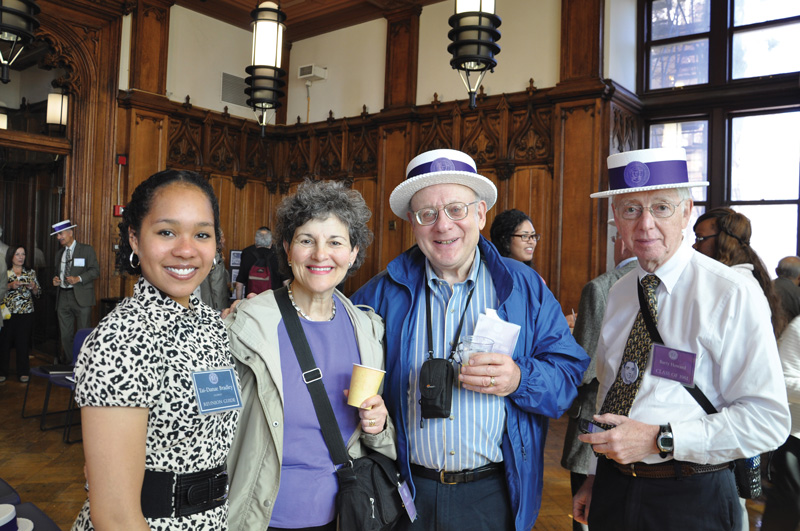

Each year, the City College Fund celebrates with alumni in commemorating the 25th, 40th, 50th, 60th and 70th anniversaries of their graduation. The festivities are designed to coincide with Commencement, typically held on campus on the last Friday of May. The anniversary classes are invited to meet for continental breakfast, march in the processional and witness the ceremonies, join faculty and staff for lunch, and take a walking tour of the campus with student guides.
Every year we celebrate milestone anniversaries with the alumni, bringing them back to the College to share in the celebrations of our graduating seniors and tour the campus with student guides. We cap off the weekend with a gala reunion dinner. In honor of their anniversaries, the alumni of City College have raised hundreds of thousands of dollars for the College and our students.
“It was not until I participated in the 2007 reunion events that I realized how much I needed to reconnect with the College. CCNY was the vehicle that gave me what I have achieved. The anniversary crystallized for me the impact CCNY has had on my life.” —Howard Campbell '67
Reunion Committees
Planning for each year's anniversary reunions begins in the fall of the prior year. We invite you to become to become a member of the Reunion Committee for your class and assist us in designing the event and reaching out to classmates. Please contact us at 212-650-6525 or email us at admin@citycollegefund.org.
The Class Gift
As a tribute to the College, anniversary classes each make a commemorative gift to the school and students. The Class Gift supports the Annual Fund and the President's Fund for Excellence, or may be otherwise designated by your Reunion Committee. This gift is a meaningful way to pay back the College for the low-cost education you received, and it is vital to our continuing mission of access and excellence. We ask that you make a generous gift in honor of your anniversary and we provide naming opportunities for gifts of $2500 and more. Please call executive director Elena Sturman if you would like to discuss your gift: 212-650-6529, or print a pledge card for your class.
The Who's Who and Where Book
In addition to attending the reunion events, we encourage you to participate in your anniversary by submitting an autobiography for the Who's Who and Where book. This book is published each spring by the City College Fund and consists of first hand accounts by the alumni, or biographies composed by our staff based on a questionnaire we provide. At the time of the reunion, the book is given to everyone who makes a submission, as well as to those who attend the Reunion Dinner. There is no fee to be included in the book.
$30
$50
$100
$250